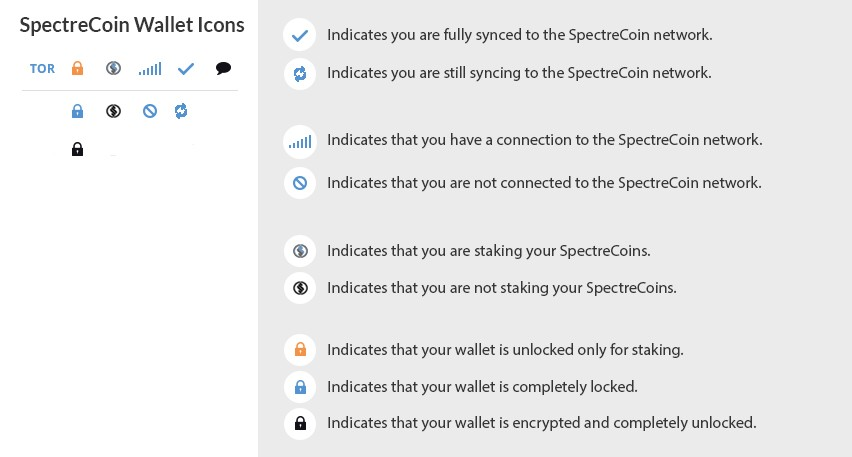
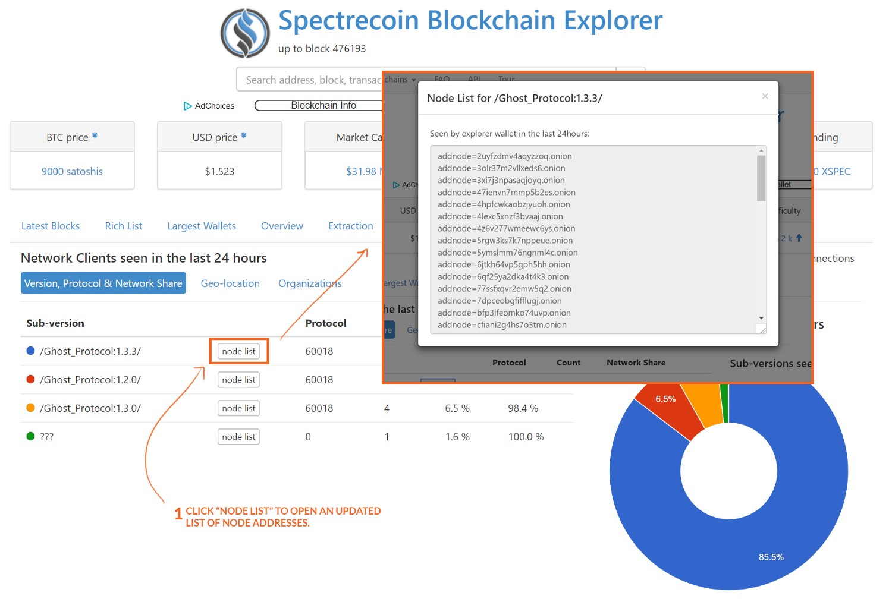
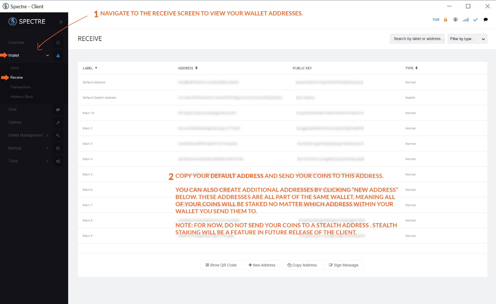
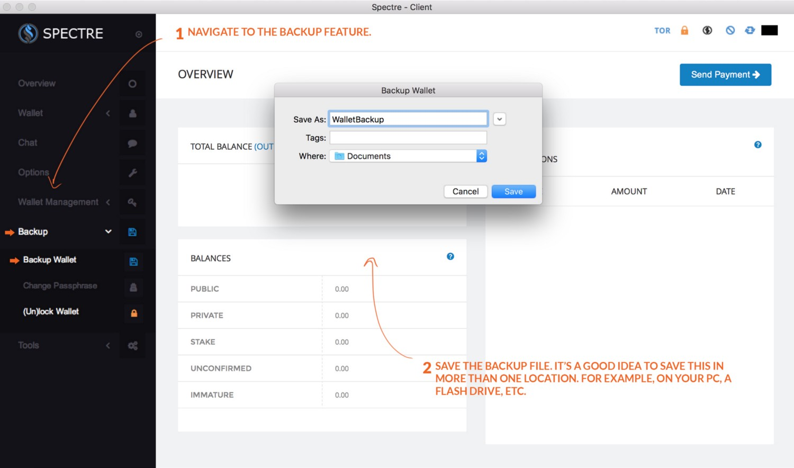
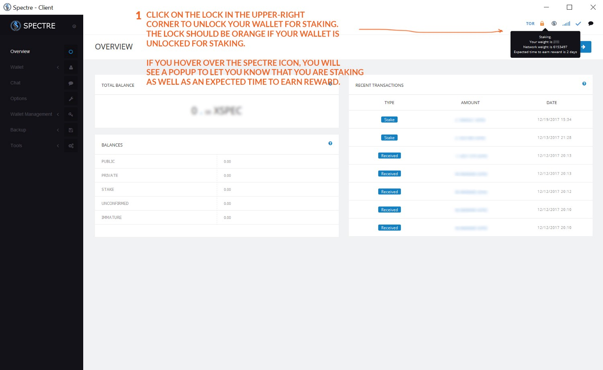

Getting started with the desktop wallet
Step 1: Download and Install the Wallet Client
First, download the SpectreCoin Desktop Wallet client. The client has install packages for Windows (32 \& 64) and Mac. You can also find a Linux build with instructions on their GitHub.
Step 2: Sync your Client to the SpectreCoin Network
Next, you’ll want to ensure that your client is fully synced to the SpectreCoin network. The sync process should begin automatically, however in some cases you will need to manually connect your wallet to the network. This is a known bug that will be fixed in the next release.
The icons in the upper-right hand corner of the wallet client will indicate the status of your wallet. Compare the icons below to your wallet’s icons in the upper-right corner to determine if your wallet is syncing properly. You can also hover over the icons in your client to reveal more status information.
If your wallet is syncing properly, you can proceed to Step 3. Otherwise, follow the steps below to manually update your wallet to begin the sync process.
If you have “0 Connections” to the SpectreCoin Network
If you are showing zero connections you will need to manually add a few node addresses to your wallet.
First, visit this website and click on the node list button for v1.3.3.
You will want to copy 5–6 of these node addresses and add them to your SpectreCoin wallet. Before we add them to the wallet, we need to make a slight modification to each line of code.
addnode=2uyfzdmv4aqyzzoz.onion
should become
addnode 2uyfzdmv4aqyzzoz.onion add
All we did was replace the = with a space, and append the word add after the address. Now you’re ready to add this to your SpectreCoin wallet! To do this, follow the steps in the image below.

Entering a node address manually.
Once you have successfully added 5–6 new node addresses, your wallet should connect and begin syncing to the SpectreCoin network. After your wallet is fully synced, proceed to Step 3.
Step 3: Send Your SpectreCoins to Your New Wallet
Now you will send your SpectreCoins to your new wallet. Navigate to the Receive screen to view your wallet addresses. By default, you will have two addresses: one normal address and one stealth address. For now, we are going to use the normal, Default Address.
Note: Never send your coins from an exchange to a stealth address. This may be supported in the future, but for now always use a normal address.
Send your SpectreCoins from the exchange to your Default Address. Once they appear in your wallet, proceed to Step 4.
Step 4: Encrypt Your Wallet
This step isn’t necessary to stake coins, however, you should do this to add a layer of protection to your investment.
Navigate to the Encrypt Wallet feature and type in a passphrase. Remember to store your passphrase in a safe place.

Step 5: Backup Your Wallet File
Again, not necessary to stake coins, but absolutely critical to ensure that you do not lose your coins. Make sure you save the backup file on multiple devices such as PC, USB, external drive, etc.
Step 6: Unlock Your Wallet and Begin Staking!
You’re now ready to begin staking! Now that we have everything set up, the last step is to unlock your wallet for staking only. The quickest way to do this is to click on the lock icon in the upper-right corner. This will prompt you to enter your passphrase. Once you have confirmed your passphrase, the lock will turn orange. If you hover your mouse over the lock icon, you will see a popup that informs you that your wallet is encrypted and unlocked for staking only.
Now, if you hover over the Spectre icon that is to the right of the lock, you will see a popup to let you know that you are staking your coins, along with other information such as estimated time to earn reward.
Note: If you see a message that says “you are not staking because you do not have mature coins,” do not worry. This message will go away in roughly 1 to 2 hours, at which point your wallet will begin staking your SpectreCoins.
That’s it! You should be all set.